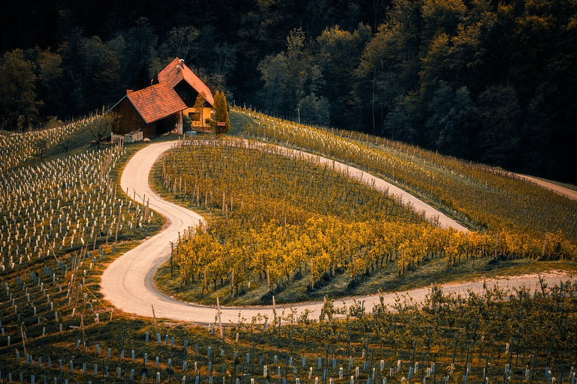
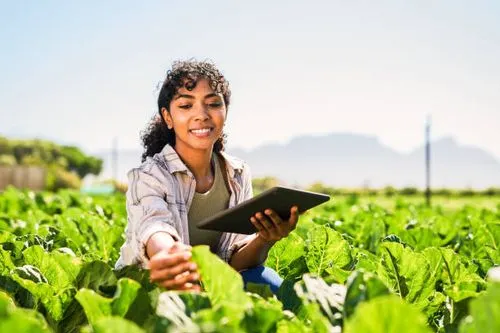
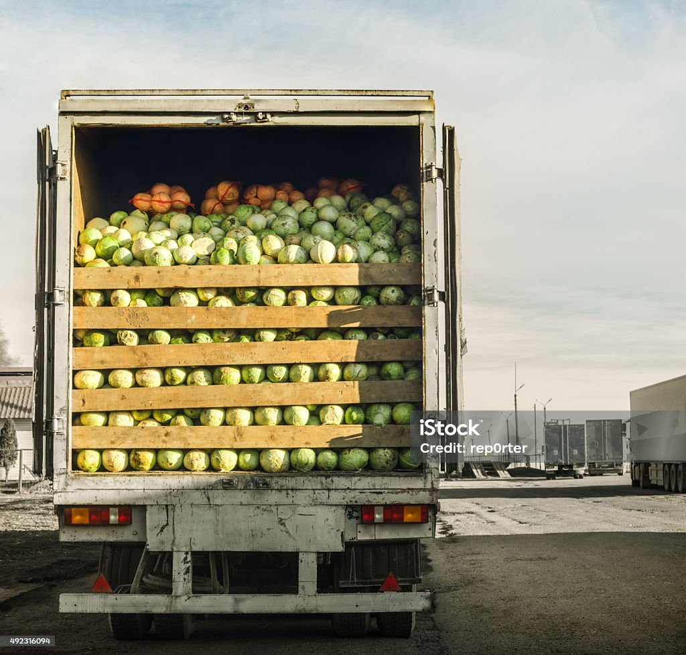
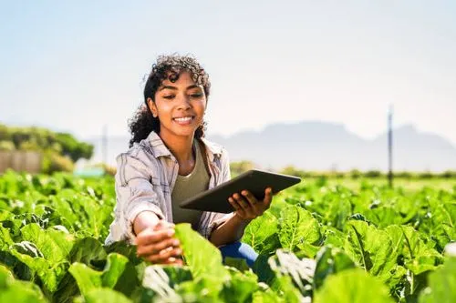
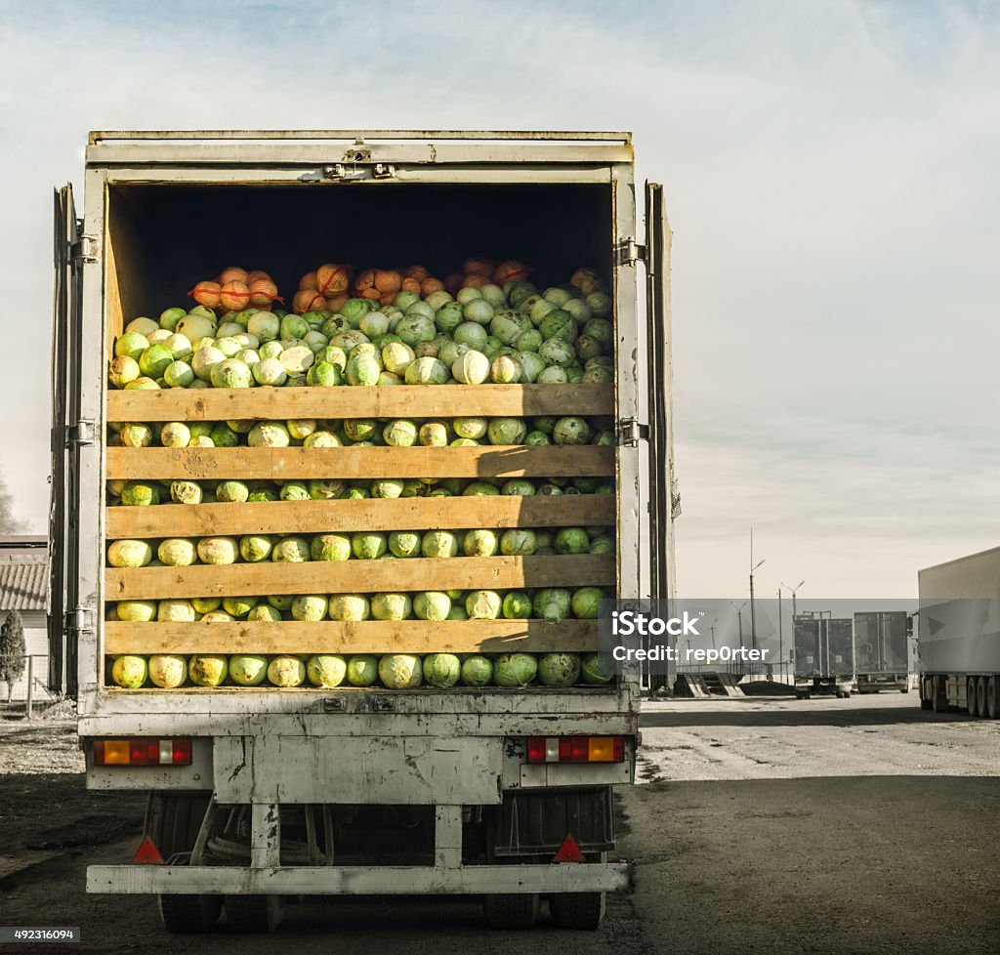
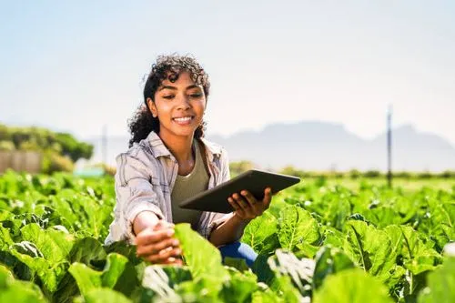
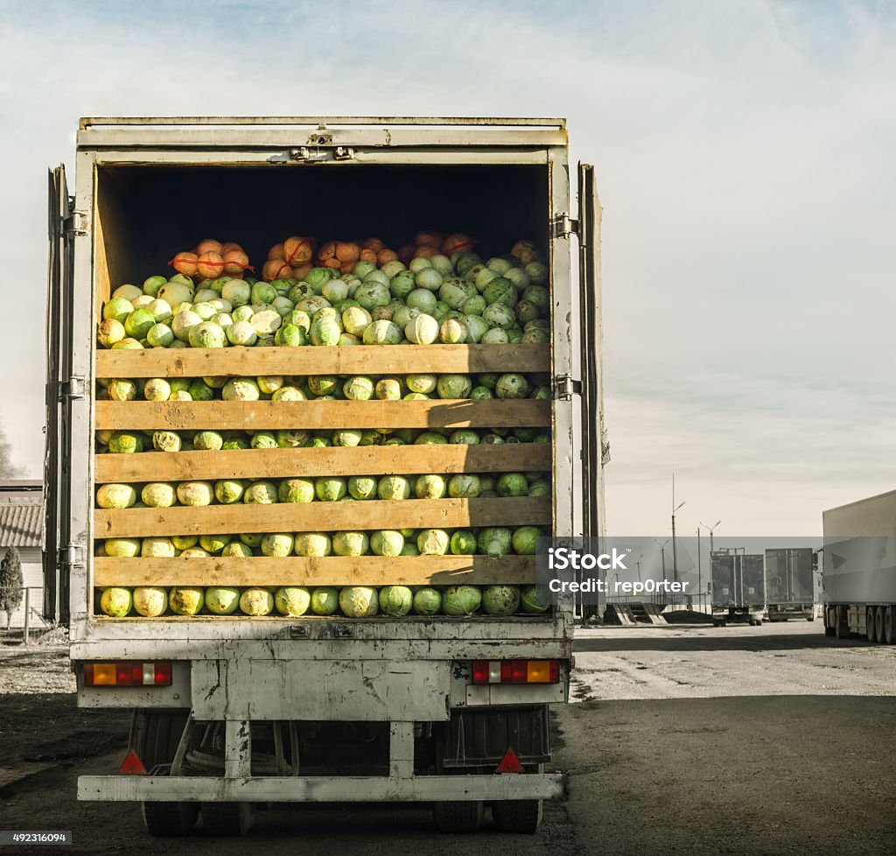

Heróis do Campo
Dona Cida, a Guardiã da Terra
Dona Cida nasceu e cresceu em uma pequena comunidade rural no interior do Paraná. Desde criança, aprendeu com os pais a plantar, colher e cuidar da terra com carinho. Mas foi depois de uma grande seca, que destruiu quase toda a plantação da família, que ela decidiu mudar tudo. Com coragem, estudou técnicas de agricultura sustentável, aprendeu a reaproveitar a água da chuva, criou um sistema de rotação de culturas e ensinou os vizinhos a fazer o mesmo. Hoje, sua pequena fazenda é referência na região, produzindo alimentos saudáveis e respeitando o meio ambiente. Além disso, Dona Cida promove oficinas para crianças da escola local, mostrando que o campo é lugar de saber, força e futuro.
Soluções Sustentáveis
- Reaproveitar a água da chuva para irrigar plantas.
- Separar o lixo corretamente para reciclagem.
- Usar sacolas reutilizáveis em vez de plástico descartável.
- Compostar restos de alimentos para adubar o solo.
- Plantar árvores e manter áreas verdes para preservar a biodiversidade.
- Utilizar técnicas de plantio direto para evitar a erosão do solo.
- Escolher produtos orgânicos para reduzir o uso de agrotóxicos.
- Reduzir o consumo de energia elétrica com painéis solares e lâmpadas LED.
- Incentivar o consumo local para diminuir a emissão de gases pelo transporte.
- Promover a educação ambiental nas escolas e comunidades.
Galeria

 




